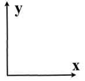

Graphene 6-ZGNR nanoribbon


Graphene 6-ZGNR nanoribbon

Here we shall learn how to build a SIESTA input file for the graphene nanoribbon N-ZGNR depicted below (for N=6):
1. Input graphene.fdf file with the graphene sheet primitive cell (2 atoms): type 4 and then give the name of the input file
2. Go to the M menu by typing M. The lattice vectors are shown at the top of the menu (below). They are depicted on the picture above as well.
Notice the REFERENCE system in which lattice vectors at the moment are the same.
3. Make an extension along the 2nd lattice vector: type Ex with:
0 0 and 0 6 and 0 0
The cell now contains 7x2=14 atoms (right): indeed, it is a good idea at this stage to show their numbers (below).




4. Breed artificially the system along the 1st lattice vector with Bb using:
0 10 and 0 0 and 0 0
This is what you would see (right).

It does look like the ribbon we would like to build, but it is not really it, not yet. Three things are still need to be done: (i) we have to remove the C atoms on both left and right sides of the system; (ii) terminate the remaining C atoms on both sides with H atoms; (iii) separate the ribbons from each other in the x direction, i.e. introduce the gap between them. These three steps should be performed in a certain order as outlined in the following.
9. Tag the new edge atoms 1 and 12 with T as before.
5. Type B0 to remove artificial breeding and make sure that xmakemol shows atomic numbers (right).

6. Save the current setting as the reference one by using SR (below).
7. Tag edge atoms 1 and 14 by using the option T following with the atomic numbers: 1 14.
8. Use Rm to remove the tagged atoms. Note that numbering of atoms changed accordingly (right)


11. Terminate the tagged atoms with H atoms using H (left). Note that termination is done along the C-C directions to the nearest neighbours of the tagged atoms 1 and 12. This is done with respect to the reference system (that is why it was necessary to save this reference configuration prior to removal of the edge C atoms in the first place).
Also note that terminated H atoms only are added along directions leading to the atoms of the reference system NOT presented in the unit cell. That is why we have two H atoms coming out of each edge C atom (each C atom has 3 neighbours in the graphene sheet). Therefore, we need to remove unnecessary H atoms now.
12. Tag not needed H atoms 14 and 15 with T.
13. Remove them with Rm (left).

This is nearly it, but we still need to separate the ribbons with each other.
14. Replace the 2nd lattice vector using option 8 with something like
20.0 0.0 0.0
But first, when asked, type 2 to indicate the change of only the 2nd vector.
15. Artificial breeding using Bb with
0 10 and 0 1 and 0 0
will show that the ribbons are now separated (right).

16. To finish the job, save the file using S followed by 4 (for SIESTA) and the file name of your choice.
10. Set the C-H distance. The default is 1.0 Angstrem, but you can use any other using one of the settings options Hd. We shall leave it to the default value.